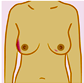

ଭାରତରେ, 60 ବର୍ଷ ବୟସ ପରେ ବିଶ୍ୱର ପଶ୍ଚିମ ଭାଗର ବିପରିତ ଅଂଶରେ ଯେଉଁଠାରେ ସ୍ତନ କର୍କଟ ଦେଖିବାକୁ ମିଳୁଅଛି, ଅଧିକତ୍ତମ ସ୍ତନ କର୍କଟ 25-50 ବର୍ଷ ବୟସରେ ସୃଷ୍ଟି ହେଉଛି; ଅତିକମ୍ରେ ଦୁଇ ଦଶକ ପୂର୍ବରୁ! ଭାରତରେ ସମଗ୍ର ଯବାନ୍ ମହିଳା ମାନଙ୍କ ସଂଖ୍ୟା ମଧ୍ୟରୁ ଆମ ପାଖରେ ଡାଇୟାଗ୍ନୋସିସ୍ ହୋଇଥିବା ସ୍ତନ କର୍କଟ ରୋଗୀଙ୍କ ଅନୁମାନ ନ’ଥିଲା।
ଗୋଟିଏ ଯୁବା ବସ୍ଥାରେ ସ୍ତନ କର୍କତ ରୋଗର ଡାଇୟାଗ୍ନୋସିସ୍ ହେବା ଏକ ଦୀର୍ଘ ଆଶ୍ଚର୍ଯ୍ୟକର କଥା ଅଟେ ଏବଂ ବହୁ ପୀଡାଦାୟକ ଅନୁଭବ ଅଟେ। କର୍କଟ ହେବା ଚିନ୍ତାରେ ସାଧାରଣତଃ ବୃଦ୍ଧ ମାନଙ୍କଠାରେ ହେବାର ମନର ଚିନ୍ତା ଠାରୁ ଯୁବାବସ୍ଥାରେ ହେବାର ମନର ଚିନ୍ତାକୁ କେବେ ହେଲେ ବାଦ ଦେଇପାରେ ନାହିଁ।
ଏଥିରେ ବହୁ ମନୋଭାବ ସେଟ୍ ହୋଇଥାଏ। ଗୋଟିଏ ଥର ଏହା ଡାଇୟାଗ୍ନୋସିସ୍ ହୋଇ ବାହାରିଲେ ଏହାକୁ ସ୍ୱୀକାର କରିବା ବହୁ କଠିନ ହୋଇଥାଏ ଏବଂ ବହୁ ମହିଳା ପ୍ରଶ୍ନ କରନ୍ତି ଏହା କ’ଣ ସତ କଥା। ଯବାନ୍ ମହିଳା ମାନେ ଏହି ସ୍ତନ କର୍କଟରରିପୋର୍ଟ୍କୁ ଦେଖି ଏହାର ଉପଚାରକରିବା ଉଦ୍ଦେଶ୍ୟରେ ରାଗନ୍ତି, ଡରନ୍ତିଏବଂ ଉତ୍ସାହିତ ମଧ୍ୟ ହୁଅନ୍ତି। ଏଗୁଡିକ ସାଧାରଣ ଏବଂ ପ୍ରକୃତିଗତ ଭାବନା। ସମସ୍ତେ ଭିନ୍ନ ଭିନ୍ନ ଆକାରରେ ପ୍ରତିକ୍ରିୟା କରନ୍ତି ଏବଂ ହୁଏତ କେତେକେଙ୍କଠାରେ କିମ୍ବା ସମସ୍ତଙ୍କ ପାଖରେ ଉପଚାରର ଭିନ୍ନ ଭିନ୍ନସ୍ତରରେ ଏହି ଅନୁଭବ ଥାଇପାରେ। ବୃଦ୍ଧା ମାନଙ୍କ ଦ୍ୱାରା ସମ୍ମୁଖିନ ହେଉଥିବା ଏହି ଇସ୍ୟୁ ଗୁଡିକ ଯବାନ୍ ମହିଳାମାନଙ୍କୁ ସ୍ତନ କର୍କଟକୁ ସାମନ୍ନା କରିବାରେ ଭିନ୍ନତା ଦେଇଥାଏ।
କାଉନ୍ସେଲିଂର ଗୁରୁତ୍ତ୍ୱପୂର୍ଣ୍ଣତା
କ୍ୟାନ୍ସର୍ ସମ୍ପୂର୍ଣ୍ଣ ଶରୀରକୁ କେବଳ ପ୍ରଭାବ ପକାଏ ନାହିଁ। ଏହା ମନ ଶରୀର ଏବଂ ସତ୍ତାକୁ ପ୍ରଭାବିତ କରେ। କେବେଳ ଶାରିରୀକ ଉପଚାର କରାଇ କର୍କଟ ରୋଗର ଉପଚାର କରାଯାଏ ନାହିଁ। କର୍କଟ ଡାଇୟାଗ୍ନୋସିସ୍ ବିଶେଷକରି ଯବାନ୍ ମହିଳା ମାନଙ୍କଠାରେ, ରୋଗ ସହିତ ବହୁ ଅସୁବିଧାଗୁଡିକୁ ମଧ୍ୟ ଧରି ରଖିଥାଏ। ଚିତ୍କିସା ଏବଂ ଡାଇୟାଗ୍ନୋସିସ୍ ପରେ ଏହା ଶାରିରିକ, ଆର୍ଥିକ ଏବଂ ଭାବତ୍ମକ କଠୋରତାକୁ ଦୃଢ ରଖେ। ଅତଃ ଏଥିପାଇଁ କାଉନ୍ସେଲିଂ ଏକ ରୋଗୀ ରୂପେ ସ୍ତନ କର୍କଟ ବିଷୟବସ୍ତୁର ଗୁରୁତ୍ତ୍ୱପୂର୍ଣ୍ଣତା ବୁଝିବାକୁ ହୁଏ ଏବଂ ସେମାନଙ୍କ ଉପଚାରର ପ୍ରତ୍ୟେକଟି ସ୍ତରରେ ନିୟନ୍ତ୍ରଣ ଅନୁଭବ କରିବାକୁ ସେମାନଙ୍କର ସମ୍ପର୍କିୟଙ୍କୁ ଉତ୍ତମରୂପେ ସୂଚିତ, ଉତ୍ତ୍ମ ରୂପେ ପ୍ରସ୍ତୁତ ଏବଂ ଅଧିକ ଗୁରୁତ୍ତ୍ୱପୂର୍ଣ୍ଣ ଅଟେ।
କାଉନ୍ସେଲିଂ ଏକ ସମର୍ଥିତ ଏବଂ ସରଳ ପରିବେଶରେ ଜଣେ ବିଶେଷଜ୍ଞଙ୍କ ଦ୍ୱାରା ବିକଳ୍ପ ଗୁଡିକର ପ୍ରମୂଖ ଉପଚାର ଏବଂ ଏହି ଡାଇୟାଗ୍ନୋସିସ୍ ବିଷୟରେ ଆଲୋଚନା କରିବାରେ ଜଡିତ। ସମାନ ଭାବେ, ସ୍ତନ କର୍କଟରେ ପ୍ରଭାବିତ ହୋଇଥିବା ସେମାନଙ୍କ ପରିବାର ଏବଂ ରୋଗୀର ବ୍ୟକ୍ତିଗତ ଆବଶ୍ୟକତାର ଯତ୍ନ କାଉନ୍ସେଲିଂ ବିଭାଗ ସମୟରେ ପ୍ରଦାନକରା ଯାଉଥିବା ମନୋବିଜ୍ଞାନ ଏବଂ ମାନସିକ ସମର୍ଥନ ଆବଶ୍ୟକ ହୋଇଥାଏ।
ସ୍ତନ କର୍କଟ ସହିତ ଜଣେ ଯବାନ୍ ମହିଳା, ବହୁତ ଗୁଡିଏ ପ୍ରଶ୍ନରେ ବନ୍ଧା ହୋଇଥାଏ ଏବଂ ଏହା ସେମାନଙ୍କର ଠିକଣା ସ୍ଥାନରେ ଭଲରେ ପହଞ୍ଚିଯାଏ।
“କ୍ୟାନସର୍” ନାମକ ରୋଗର ନାମରୁ ହିଁ ସଠିକ୍ କେନ୍ଦ୍ରିଭୂତ ହୋଇଥିବା ଡାଇୟାଗ୍ନୋସିସ୍ର ବାହ୍ୟ ଉପଚାର ଏବଂ ଏହାକୁସମ୍ମୁଖିନ କରିବାର ସମୟରେ ଆସିଥାଏ, ଜଣେ ପିଡିତା ବହୁ ଅସୁବିଧାର ସମ୍ମୁଖିନ ହୁଅନ୍ତି। ଏହାକୁ ସାହସ, ଦୃଢ ସଂଙ୍କଳ୍ପ ଏବଂ ଦୃଢତା ଉପରେ ଆକର୍ଷଣ କରିବା ପାଇଁ ଏହି ରୋଗସହିତ ଲଢିବା ରୂପରେ “ଆନ୍ତରିକ ଶକ୍ତି” ଏହି କ୍ୟାନସର୍ ବିରୁଦ୍ଧରେ ଏହା ବହୁମାତ୍ରାରେ ମହତ୍ତ୍ୱପୂର୍ଣ୍ଣ ଅଟେ। .
ସେହି ସମ୍ଭାବିତ ପ୍ରଶ୍ନ ଗୁଡିକ କ’ଣ ଯାହାକୁ ଆପଣ ଜଣେ ବିଶେଷଜ୍ଞଙ୍କୁ ପଚାରିବାକୁ ଚାହିଁ ପାରନ୍ତି?
ବିଶେଷଜ୍ଞଙ୍କୁ ପ୍ରମୁଖ ବିକଳ୍ପ ଗୁଡିକର ଉପଚାର ସମ୍ବଳିତ ବିଷୟରେ ଜଣେ ବିନା ଦ୍ୱିଧାରେ ପ୍ରଶ୍ନ ପଚାରି ପାରିବେ। ସେମାନେ ଜଡିତ ହୋଇପାରିବେ
କାହିଁକି ମୋ ପାଇଁ ଏହି ଉତ୍ତମ ଚିତ୍କିସାଟି?
ସେଗୁଡିକର କୌଣସି ବିକଳ୍ପ ରହିଛି କି?
ସମ୍ଭବ୍ୟ ପାର୍ଶ୍ୱ ପ୍ରତିକ୍ରିୟା ଗୁଡିକ କ’ଣ?
ସେଠାରେ କୌଣସି ଦୀର୍ଘ ସ୍ଥାୟି ଏବଂ କ୍ଷଣସ୍ଥାୟି ଅସୁବିଧାଗୁଡିକ ରହିଛି କି?
ଏହି ଉପଚାର ଦୈନନ୍ଦିନ ଜୀବନରେ କିପରି ପ୍ରଭାବ ପକାଇବ?
ଏକ ସରଳସାବଲିଳ ସହଜ ଭାଷାରେ ଏକ ବ୍ୟବହାରିକ ଭଙ୍ଗିରେ ପ୍ରଶ୍ନ ଗୁଡିକର ସଠିକ୍ ତର୍ଜମା କରିବା ଜଣେ ବିଶେଷଜ୍ଞଙ୍କର କର୍ତ୍ତବ୍ୟ ଅଟେ
ଡାଇୟାଗ୍ନୋସିସ୍ ସହିତ କପି ହେଉଛି
ଅନ୍ୟାନ୍ୟ ଲୋକମାନଙ୍କୁ କହିବା
କ୍ୟାନସର୍ ଡାଇୟାଗ୍ନୋସିସ୍ ବିଷୟରେ ଲୋକମାନଙ୍କୁ କହିବା ବହୁତ କଷ୍ଟ ଅଟେ। ହୁଏତ ଏହା ଅରମ୍ଭରୁ ବହୁ କଠିନ ହୋଇପାରେ, ଏହା ଲୋକମାନଙ୍କର ସମର୍ଥନ ଏବଂ ଉଭୟଙ୍କ ଉପରେ ଥିବା ବିଶ୍ୱାସ ଫଳରେ ଧିରେ ଧିରେ ସହଜ ହୋଇଥାଏ। ଯଦି ଡାଇୟାଗ୍ନୋସିସ୍ ହୋଇଥିବା ସ୍ତନ କର୍କଟ ରୋଗୀ ଜଣେ ଶିଶୁ ହୁଏ, ନିର୍ଣ୍ଣୟ କରନ୍ତୁ ଆପଣ ତାହାକୁଏହି ପରିବର୍ତ୍ତନ ବିଷୟରେ କହିବା ଚ୍ୟାଲେଞ୍ଜ ସଦୃଶ ହୋଇପଡେ। ଶିଶୁ ଖରାପ କଥାକୁ ବହୁ କଳ୍ପନା କରିପାରେ, ଏଣୁ ତାହାକୁ ପ୍ରକୃତ କଥା କହିବା ଗୁରୁତ୍ତ୍ୱପୂର୍ଣ୍ଣ ଅଟେ। ସେଠାରେ ଶିଶୁଙ୍କ ସହିତ କଥା ହେବାର ସଠିକ୍ ଦିଗ ମିଳି ପାରେ ନାହିଁ। ଏହା ସେମାନଙ୍କରପାରିବାରିକ ଅବସ୍ଥାଏବଂ ବୟସ ଉପରେ ନିର୍ଭର କରେ
ଚିନ୍ତାସେଠାରେ ବିଭିନ୍ନ ସ୍ୱୟଂ ସହାୟତା କୌଶଳ ରହିଛି ଯାହାକୁ ଜଣେ ପ୍ରଶିକ୍ଷିତ କାଉନ୍ସେଲର୍ଙ୍କ ଦ୍ୱାରା ଉପଦେଶ ଦିଆଯାଇଥାଏ। ଚିନ୍ତା ସ୍ତରକୁ କମାଇବାରେ ସାହାଯ୍ୟ କରୁଥିବା ପ୍ରତ୍ୟହ ଶାରିରିକ କ୍ରିୟା ଧ୍ୟାନ ପରି ବିଶ୍ରାମ କରିବାର କୌଶଳ ରହିଅଛି
ଗର୍ଭାବସ୍ଥା ସମୟରେ ସ୍ତନ କର୍କଟର ଡାଇୟାଗ୍ନୋସିସ୍କେତେକ ମହିଳା ପିଲା ଜନ୍ମ କରି ସାରିବା ପରେ କିମ୍ବା ଗର୍ଭାବସ୍ଥାରେ ଥିବା ସମୟରେ ସ୍ତନ କର୍କଟ ରୋଗରେ ଡାଇୟାଗ୍ନୋସିସ୍ ହୋଇଥା’ନ୍ତି – ଗୋଟିଏ ସୁଖ ସମୟ ସାଙ୍ଗେସାଙ୍ଗେ ଦୁଖଃରେ ପରିଣତ ହୋଇଯାଏ। ସେଠାରେ କୌଣସି ପ୍ରାମାଣ୍ୟ ନ’ଥାଏ, ଯେ ଅନ୍ୟ ଏକ ସମୟରେ ହେଉଥିବା ସ୍ତନ କର୍କଟ ସୃଷ୍ଟି ହେବା ଠାରୁ ଆହୁରି ଆକ୍ରାମକ ହୁଏ ଗର୍ଭାବସ୍ଥା ସମୟର ସ୍ତନ କର୍କଟ। ସେ ଯାହା ହେଉ, ନିଶ୍ଚିତ ଭାବେ ବହୁ ସଂଖ୍ୟାରେ ମହିଳା ମାନେଏହି ସ୍ତନ କର୍କଟ ଡାଇୟାଗ୍ନୋସିସ୍ କରିବାରେ ବିଳମ୍ବ କରିଲେ ଏହାର ଉପଚାର କରିବା କଠିନତର ହୋଇପଡେ ଜଣେ ଗର୍ଭବତୀ ମହିଳାଙ୍କୁ ଉପଚାରର କରିବାର ସୁଯୋଗ ସେତେବେଳେ ମିଳେ ଯେତେବେଳେ ଡାଇୟାଗ୍ନୋସିସ୍ ହୋଇଥାଏକି ସେମାନେ ଗର୍ଭବସ୍ଥା ମଧ୍ୟ ଦେଇ ଗତି କରୁଛନ୍ତି ଏବଂ କର୍କଟ ରୋଗର ସ୍ତରଗୁଡିକରେ ରହିଛନ୍ତି। ରୋଗୀଙ୍କୁ ଏହାପରେ ଦେଖିବାଜଣେ ଉପଚାର ଦଳ ଏବଂ ଜଣେ ପ୍ରସୂତିବିଜ୍ଞାନୀଙ୍କର ଗୁରୁତ୍ତ୍ୱପୂର୍ଣ୍ଣ ବିଷୟ ଅଟେ। ବହୁ ସ୍ତନକର୍କଟ ଉପଚାର ଗୁଡିକଗର୍ଭାବସ୍ଥା ସମୟରେ ଦିଆଯାଇପାରେ। କିଛି ପରିସ୍ଥିତିରେ ଏହା ଗର୍ଭକୁ ସମାପ୍ତ କରିବା ପାଇଁ ଆବଶ୍ୟକ ହୋଇପାରେ।
ମୁଁ ଆଉଥରେ ଗର୍ଭବତୀ ହୋଇପାରେ କି?
ପ୍ରଜନନ କରିବାର ଇସ୍ୟୁଗୁଡିକସ୍ତନ କର୍କଟ ଉପଚାର ସମୟରେ ଦିଆଯାଇଥିବା ଉପଚାରଗୁଡିକ ମଧ୍ୟରୁ କେତେକ ପ୍ରଜନନ ଉପରେ ପ୍ରଭାବ ପକାଇପାରେ। ମହିଳା ମାନେ ସେମାନଙ୍କର ପ୍ରଜନନ ଗତ ଇସ୍ୟୁ ଗୁଡିକୁ ଡାକ୍ତରଙ୍କ ସହିତ ଡାଇୟାଗ୍ନୋସିସ୍କରାଇ ନ’ପାରନ୍ତି କାରଣ ସେଗୁଡିକ ଉପଚାର ଦ୍ୱାରା ଅଭିଭୂତ ହୋଇଯିବ, କିମ୍ବା ସେହି କର୍କଟ ଉପଚାର ଗୁଡିକ ପ୍ରଜନନତା ଉପରେ ସତର୍କ କରାଇବାରେ ପ୍ରଭାବ ପକାଇବ କିମ୍ବା ସେମାନେ ପିଲା ଜନ୍ମ କରିବାକୁ ଚାହୁଁ ନ’ଥିବେ। ଯଦି ଜଣେ ବ୍ୟକ୍ତିଙ୍କର ପରିବାର ପୂରାହୋଇନାହିଁସେ ଏହାକୁ ପ୍ରାଥମିକତାରୂପେ ଗ୍ରହଣ କଲେ, ଏହା ରୋଗୀ ଏବଂ ତାହାର ସ୍ୱାମୀ ସହିତ ରହିବାପାଇଁ ଅନ୍ୟ ଏକ ପ୍ରଜନନ ବିଶେଷଜ୍ଞଙ୍କ ପାଖରେ ମହିଳାଙ୍କ ଉଲ୍ଲେଖ କରିବା ପାଇଁ ସ୍ତନ କର୍କଟ ରୋଗୀର ଉପଚାର ସମ୍ବନ୍ଧରେ ଜଣାଇବା ପ୍ରତ୍ୟେକ ଡାକ୍ତରଙ୍କର ମୂଖ୍ୟକର୍ତ୍ତବ୍ୟ ଅଟେ।
ଏହା ସ୍ତନ କର୍କଟର ଉପଚାର ସମ୍ପୂର୍ଣ୍ଣକରିବା ପରେ ଭବିଷ୍ୟରେ କେତେକଙ୍କ କ୍ଷେତ୍ରରେ ଭ୍ରୁଣ ରେ ଉପଯୋଗ କରିବା ପାଇଁ କିଛି ବିଷୟରେ ଅଣ୍ଡାକୁ ଫ୍ରିଜ୍ କରିବାକୁ ପ୍ରଜନନ ଉପଚାରକୁ ସମ୍ଭବ କରାଯାଇ ପାରେ। .
ଏଜ ସାଧାରଣ ନିର୍ଦ୍ଦେଶକ ପରି, ଏହା ଗର୍ଭବତୀ ହେବା ପୂର୍ବରୁ ଦୁଇ ରୁ ତିନି ବର୍ଷ ପାଇଁ ଅପେକ୍ଷା କରିବା ପାଇଁ ଉପଦେଶ ଦେବା ଆବଶ୍ୟକ। ଶରୀରକୁ ସୁସ୍ଥ ହେବାକୁ ଅନୁମତି ଦିଅନ୍ତୁ ଏବଂ ଡାଇୟାଗ୍ନୋସିସ୍ ପରେ ଅତିବେଶୀରେ ପ୍ରଥମ ଦୁଇ – ତିନି ବର୍ଷ ଆଉଥରେ କର୍କଟ ହେବାର ବିପଦର ମଧ୍ୟ କାରଣ ହୋଇପାରେ। ପ୍ରତ୍ୟେକଙ୍କ ପାଇଁ ଅପେକ୍ଷା କରିବା ସମ୍ଭବ ନ’ହୋଇପାରେ। ପରିବାର ନିୟୋଜନ କରିବା ପୂର୍ବରୁ ଜଣେ ସ୍ତନକର୍କଟ ରୋଗୀକୁ ବ୍ୟକ୍ତିଗତ ରୂପରେ ନିଜର କର୍କଟ ଡାଇୟାଗ୍ନୋସିସ୍ କରିବ ପରେ ଜଣେ ବିଶେଷଜ୍ଞଙ୍କ ଠାରୁ ଏହି ସ୍ତନ କର୍କଟ ସମ୍ପର୍କରେ ପ୍ରମୂଖ ଉପଦେଶଗୁଡିକୁ ଗ୍ରହଣ କରିନେବା ଆବଶ୍ୟକ।
ଗର୍ଭନିରୋଧଏହି ଗର୍ଭନିରୋଧକ ହର୍ମୋନାଲ୍ ଗର୍ଭନିରୋଧକ ବଟିକା ଯେପରି ସାଧାରଣ ଭାବେ ଯେଉଁ ଗର୍ଭନିରୋଧକ ବଟିକା ସ୍ତନ କର୍କତର ପୁନରାବୃତ୍ତିକୁ ପ୍ରୋତ୍ସାହିତ କରିପାରେ ରେସ୍ତନ କର୍କଟ ପାଇଁ ଏହି ବଟିକାର ସେବନକୁ ସୁପାରିଶ୍ କରାଯାଇ ନାହିଁ ଏହାର ଉପଯୋଗ ଉପରେବିଚାର କରିବା ମହିଳା ମାନଙ୍କପାଇଁ ବହୁତ ଗୁରୁତ୍ତ୍ୱପୂର୍ଣ୍ଣ ଅଟେ। ଅବରୋଧ ପଦ୍ଧତି ରୂପରେ କଣ୍ଡୋମ୍ର ବ୍ୟବହାର ଉତ୍ତମ ବିକଳ୍ପ ଅଟେ।
ଶାରିରିକ ଛବିସ୍ତନ କର୍କଟ ଉପଚାର ବେଳେ ବେଳେ ଶରୀରରକୁ ଦେଖିବାର ଶୈଳୀରେ ପରିବର୍ତ୍ତନ ଆଣିଥାଏ। ଆତ୍ମବିଶ୍ୱାସ ଧିରେ ଧିରେ କମିବାକୁ ଲାଗେ ଏବଂ ଗୋଟିଏ ବହୁ ସାର୍ବଜନିକ ରୂପେ ବାହାରି ଯିବା ପରି ଅନୁଭୂତ ହୁଏ। ଗୋଟିଏ ପୋଷାକ ଦୋକାନରେ ଏବଂ ସୁଇମିଂ ପୁଲ୍ରେ ସାର୍ବଜନିକ କ୍ଷେତ୍ରରେ ପରିବର୍ତ୍ତନ ହେବାର ଉପଯୋଗରେ ଉସ୍ୟୁ କାଉନ୍ସେଲିଂ କରାଜାଇ ପାରେ ଏପରିକି ସରଳ କଥା ଏବଂ ଏହି କଠିନ ଅବସ୍ଥାରେ ପରାମର୍ଶ ଏବଂ ସମର୍ଥନ ପାଇଁ ନିତାନ୍ତ ଜରୁରୀ ଅଟେ
ରଜ୍ଜୋନିବୃତ ପାର୍ଶ୍ୱ ପ୍ରତିକ୍ରିୟାସ୍ତନ କର୍କଟ ପାଇଁ କିଛି ଉପଚାର ରଜ୍ଜୋନିବୃତ୍ତତା ଉପରେ ସାଧାରଣ ଭାବେ ପ୍ରତ୍ୟେକ୍ଷ ପ୍ରଭାବ ପକାଇଥାଏ। କେମୋଥେରାପି ଏବଂ ବହୁ ହର୍ମୋନାଲ୍ ଡ୍ରଗ୍ ଗୁଡିକ ଜୀବନର ଗୁଣବତ୍ତାଉପରେ ପ୍ରଭାବ ପକାଇଥାଏ। ଏମିତି ମୁହଁ ଉପରେ ନାଲି ଦିଶିବା, ବାଳ ଝଡିବା, ରାତିରେ ଝାଳ ବୋହିବା, ଯୋନି ଶୁଖିଯିବା, ଆଳସ୍ୟ, ଖରାପ ଏକାଗ୍ରତା ଏବଂ ମନସ୍ତାତ୍ୱିକ ଗତ ଲକ୍ଷଣ ଅନୁଭବ କରି ପାରନ୍ତି। ସେମାନଙ୍କ ମାନିବା ଉପରେ ବହୁ ପ୍ରଭାବ ପଡିପାରେ। ଏହା ସେହି ବିଶେଷଜ୍ଞମାନଙ୍କ ସହିତ ଗପିବା ଗୁରୁତ୍ତ୍ୱପୂର୍ଣ୍ଣ ଅଟେ ଏବଂ ଜଣେ ସ୍ତ୍ରୀ ରୋଗ ବିଶେଷଜ୍ଞଙ୍କ ଦ୍ୱାରା ଏହି ଇସ୍ୟୁ ଗୁଡିକର ସମାଧାନରେ କିଛି ସାହାଯ୍ୟ ମିଳିପାରେ।
ବାଳ ଝଡିବାବାଳ ଝଡିବା ସ୍ତନ କର୍କଟ ରୋଗର ପାର୍ଶ୍ୱପ୍ରତିକ୍ରିୟା ଗୁଡିକ ମଧ୍ୟରୁ ସବୁଠାରୁ ଭୟାନକ ବିଷୟ ଅଟେ। ଏହି ଇସ୍ୟୁ ଉପରେବିଚାର କରିବା ପୂର୍ବ ରୁ ଗୋଟିଏ ବେଶଜ ଚୁଟି ନିର୍ମିତ ଖୋସା ବ୍ୟବହାର କରିବା ଏବଂ ଗଭୀର ଆତ୍ମବିଶ୍ୱାସର ସହିତ ଜଣେ ପରାମର୍ଶଦାତାଙ୍କ ଠାରୁ ପରାମର୍ଶ ନିଅନ୍ତୁ। କିଛି ମହିଳା ଏହି ଉପଚାର ପୂର୍ବରୁ ପ୍ରତିଶୃତି ବଦ୍ଧ ଥିବା ତିରୁପତି ଯାଇ ଲଣ୍ଡା ହୋଇ ଆସନ୍ତି। ମୋ ରୋଗୀ ମାନଙ୍କ ମଧ୍ୟରୁ ଜଣେ ମୋତେ କହିଲେ ସେ “ଲଣ୍ଡାଏବଂ ସୁନ୍ଦର’- ଗୋଟିଏ ସୁନ୍ଦର ଆତ୍ମବିଶ୍ୱାସ ଦେଖାଇ 23- ବର୍ଷ ଜଣେ ମହିଳା ମୋତେଏହି କଥା କହିଥିଲେ – ଏହି ସମସ୍ତ ପ୍ରଭାବ ଏବଂ ଉତ୍ତମ ପରାମର୍ଶ ଗୁଡିକର ଫଳାଫଳ ମନକୁ ଶକ୍ତିଶାଳୀ କରିବା ସହିତ ରୋଗରେ ଅଧା ଯୁଦ୍ଧ ଜିତି ଯାଏ
ସ୍ତନ ପୁନଃନିର୍ମାଣସ୍ତନ କର୍କଟସର୍ଜରୀ ସ୍ତନ କିପରି ଦେଖା ଯାଉଛି ଏବଂ ଅନୁଭବ କରୁଛି ତା ଉପରେ ପ୍ରଭାବ ପକାଏ। କିଛି ମହିଳା ଯେଉଁମାନେ ସ୍ତନ ଉଚ୍ଛେଦନ(ସମସ୍ତ ସ୍ତନ ଏବଂ ନିପଲ୍ର ଅପସାରଣ) କରିବାକୁ ସୁପାରିଶ୍ କରାଯାଇଥାଏ ମହିଳା ମାନଙ୍କ ଠାରେ ଏହାକୁ ପାଇବା କଷ୍ଟସାଧ୍ୟ ଅଟେ ଯେଉଁ ମାନେ କି ସ୍ତନ ସଂରକ୍ଷଣ ସର୍ଜରୀକରିବାର ସୁଯୋଗ ପାଇଥିବେ। ପୁନଃନିର୍ମାଣ ପାଇଁ ସମସ୍ତ ମହିଳା ମାଙ୍କୁ ନିଶ୍ଚିତ ବିକଳ୍ପ ଗୁଡିକର ଉଦ୍ଦେଶ୍ୟ ପ୍ରତି କାଉନ୍ସେଲ୍ ହେବାକୁ ପଡିବ, ଏହି ସ୍ତନ ଉଚ୍ଛେଦନ କରିଥିବା ମହିଳା ମାନଙ୍କର ବହୁମତ ପାଇଁ ଭାରତରେ ଗୋଟିଏ ଅନୁପସ୍ଥିତ ବୈଶିଷ୍ଟ୍ୟ କରାଯାଇଛି। କାଉନ୍ସେଲିଂ ସମୟରେ ପୁନଃନିର୍ମାଣ ଉପଚାରର ଏକ ଗୁରୁତ୍ତ୍ୱପୂର୍ଣ୍ଣ ଅଂଶ ହୋଇପାରେ ମାନସିକ ଉପଚାର ଏବଂ ଉତ୍ତମଭାବେ ବଞ୍ଚିବାରେ ସାହାଯ୍ୟ କରେ। ସ୍ତନ ପୁନଃନିର୍ମାଣ ଯୋଜନା ପାଇଁ ସାଥିର ଦର୍ଶନ ଏବଂ ପସନ୍ଦ ରହିବା ଏକାନ୍ତ ଆବଶ୍ୟକ ଅଟେ।
ସମ୍ଭୋଗତାମହିଳା ମାନେ ଦେଖିବାକୁ ପାଇବେ ଯେ, ସେହି ସମୟରେ ଏବଂ ଉପଚାର ପରେ ସେମାନଙ୍କର ସମ୍ଭୋଗ ଜୀବନରେ କିଛି ପରିବର୍ତ୍ତନ ଘଟିଛି। ବହୁତ ଲୋକ ସମ୍ଭୋଗଜନିତ ସମ୍ପର୍କ ରଖିବାରେ ଅସୁରିକ୍ଷତା ଅନୁଭବ କରିବେ। ସ୍ତନ/ଛାତି ପାଖରେ ଯନ୍ତ୍ରଣା/ଛୁଞ୍ଚିମାରିବା ଏହି ସର୍ଜରୀ ଏବଂ ରାଡିଓଗ୍ରାଫି ହୁଏତ ମିଶିବାର ସୀମିତ କରିଦେଇଥାଏ। ଅନ୍ୟ ଏକ ପକ୍ଷରେ କେମୋଥେରାପି ଆପଣଙ୍କ ସମ୍ଭୋଗ ଇଚ୍ଛା ଶକ୍ତିକୁ କମାଇଦେଇଥାଏ।
ଯୋନିରେ ଶୁଷ୍କତା ଅନୁଭବ କରିବା ଅନ୍ୟ ଏକ ବଡ ଇସ୍ୟୁ ଅଟେ। କେମୋ ଥେରାପି ଡ୍ରଗ୍ କାରଣରୁ ଶୀଘ୍ର ରଜ୍ଜୋନିବୃତ୍ତ ହୁଏ ଏବଂ ବନ୍ଧ୍ୟାତ୍ତ୍ୱ ସମ୍ଭୋଗତା ଉପରେ ପ୍ରଭାବ ପକାଇ ଥାଏ।
ସାଥି ନିଜ ଭିତରେ ଏହି ବିଷୟରେ କଥା ହୋଇପାରିବେ ଏବଂ ଜଣେ ପ୍ରସୂତିବିଜ୍ଞାନୀଙ୍କ ଠାରୁ ଗୋଟିଏ ପ୍ରାକ୍ଟିକାଲ୍ ସମାଧାନ ପାଇବାକୁ ପରାମର୍ଶ ନେଇପାରନ୍ତି
ବହୁ ମହିଳା ନିଜ ସାଥିଙ୍କୁ ତାଙ୍କୁ ସମ୍ପୂର୍ଣ୍ଣ ଭାବେପ୍ରତ୍ୟାକ୍ଷାନ କରିବାର ଦେଖିବାକୁ ମିଳନ୍ତି। ଏହା ବିଶେଷକରି ପୃଥିବିରେ ଏପରି ମହିଳା ମାନଙ୍କ ସହିତ ଡିଲ୍ କରିବା କଷ୍ଟସାଧ୍ୟହୋଇପଡେ। ଏହି ସବୁ ଘଟଣା ଆରମ୍ଭ ହେବା ପରଠାରୁ କାଉନ୍ସେଲିଂ କରିବା ନିନ୍ତାନ ଜରୁରୀ ଅଟେ।
ଡାଏଟ୍ଗୋଟିଏ ସୁସ୍ଥକର ଖାଦ୍ୟ ଖାଇବା ଦ୍ୱାରା ଏହା ବହୁ ସାହାଯ୍ୟକାରୀ ପରାମର୍ଶ ନେଇପାରିବେ। ପ୍ରତ୍ୟେହ ଶାରିରିକ କ୍ରିୟାକଳାପର କିଛି ପାର୍ଶ୍ୱ ପ୍ରତିକ୍ରିୟାରୁ ଆସ୍ୱସ୍ତି ମିଳେ ବିଶେଷ କରି କାନ୍ଧ ଏବଂ ହାତରେ ସର୍ଜରୀ ପରେ ଚଳାଇବାରେ ବହୁ ଲାଭ ଚଳାଇବାରେପ୍ରଦାନ କରିଥାଏ
ପୁନରାବୃତ୍ତିକୁ ବିକଶିତ କରିବା ଏବଂ ଅଧିକରୁ ଅଧିକ ପ୍ରତିକ୍ରିୟା ଗୁଡିକର ଆକଳନ କରିବାଠାରୁ ଅଧିକ ଅଟେ - ମୁଁ ଆଞ୍ଜେଲିନା ଜୋଲି’ଙ୍କ ପ୍ରଭାବରେ ଉଲ୍ଲେଖ କରେ
ଏହି ସ୍ତନ କର୍କଟ ସହିତ କିଛି ଯବାନ୍ ମହିଳାମାନଙ୍କ ଆଗରେ ସୁସ୍ଥସ୍ତନରେ କ୍ୟାନସର୍ ହେବା ପାଇଁ ନିଜର ବିପଦଗୁଡିକୁ ଅଧିକତର୍ଜମା କରିବାକୁ କରିଥାନ୍ତି - ବେଳେ ଡ୍ରାଇଭିଂ କରିବା ସମୟରେ ସ୍ତନ ଅପସାରଣ କରିଦିଆ ଯାଇଥାଏ।.
ଏଠାରେ ପ୍ରମାଣଅଛି ଯେ ( କୋଣ୍ଟ୍ରାଲାଟେରାଲ୍ ପ୍ରୋଫାଲିଟିକ୍ ସ୍ତନଉଚ୍ଛେଦନ) ଜୀବିତ ରହିବାର ଅସ୍ୱସ୍ଥିତତାର ସ୍ଥିରତାନ’ଥାଏ, ଏହି ପ୍ରକ୍ରିୟା ପାଇଁ ଅନୁରୋଧ କରୁଥିବା ପରେ ମଧ୍ୟ ମହିଳା ମାନଙ୍କର ସଂଖ୍ୟା ବଢୁଅଛି, ସମଗ୍ର ଇତିହାସରେ ଗୋଟିଏ ମଜଭୁତ୍ ପରିବାର ରୂପରେ ଏଞ୍ଜେଲିନାଙ୍କ ଦ୍ୱିପକ୍ଷୀୟ ରୋଗ ନିରୋଧୀ ସ୍ତନ ଉଚ୍ଛେଦନ କର୍କଟ ବିକଶିତ ହେବାର ବିପଦ କାରକ ଗୁଡିକୁ ଆହୁରି ଅଧିକ ସୁରକ୍ଷା ଦେବାରେ ଲାଗିଛି।
ଏକ ସରଳ ସାବଲିଳ ଏବଂ ସହଜ ଭାଷାରେ ବୁଝିପାରୁଥିବା ଡାକ୍ତରଙ୍କ ଦ୍ୱାରା କାରକଗୁଡିକ ସମାଧାନ ହେବା ଆବଶ୍ୟକ। ଉତ୍ତମ କଥାବାର୍ତ୍ତା ମହିଳା ମାନଙ୍କୁ ସାନ୍ତ୍ୱନା ଦିଏ କି ସେମାନେ ଅନ୍ୟ ଏକ ସ୍ତନକୁ ପ୍ରୋଫାଲିଟିକ୍ ଉଚ୍ଛେଦନ ବ୍ୟବହାର କରିବା ଦ୍ୱାରା ପିଡିତାବସ୍ଥାରେ ଲାଭ ପାଇ ପାରିବେ
କ’ଣ କର୍କଟ ଆଉଥରେ ଆସିପାରେ?ଯବାନ୍ ମହିଳା ମାନେ ଏବେ ପର୍ଯ୍ୟନ୍ତ ମଧ୍ୟ ଏହି ପ୍ରଶ୍ନ କରି ଆସୁଛନ୍ତି ଏବଂ ସେମାନଙ୍କ ଠାରେ ସ୍ତନ କର୍କଟ ଡାଇୟାଗ୍ନୋସିସ୍ ହେଲେ ଏହା ପୁନଃ ଫେରିବାର ଭୟ ରହିଥାଏ। ଏହି ଉପଚାର ଗୁଡିକରଲକ୍ଷ୍ୟ ହେଉଛି ଏହି ଭୟକୁ କମାଇବା। ଯଦି ଶୀଘ୍ର ଚିହ୍ନିତ ହୁଏ ତେବେ ଅଧିକାଂଶ ପୁନରାବୃତ୍ତି ହେବ ନାହିଁ। ସେ ଯାହାହେଉ, କିଛି ପୁନାବୃତ୍ତି ଗୁଡିକୁବିକାଶ କରିବାରଅଛି। ମୁଁ ମୋ ରୋଗୀଙ୍କୁ ଏହା ଦିଗରେ ମନ କେନ୍ଦ୍ରିଭୂତ କରିବାର ପରାମର୍ଶ ଦେଇଥାଏ। ମୁଁ ସବୁବେଳେ ବିଶ୍ୱାସ କରେ କାଉନ୍ସେଲିଂ ଉପଚାରର 50% ଅଟେ। ଏବଂ ଏକ ଅପ୍ରସ୍ତୁତ ମନ ଉପଚାର ସହିତ ପ୍ରଭାବଶାଳୀ ରୂପେ ଡିଲ୍ କରି ପାରେ ନାହିଁ। ଯେଉଁ ରୋଗୀ ମାନେ ନିଜ ମନରେ ପଜେଟିଭ୍ ଭାବନା ରଖନ୍ତିସେମାନଙ୍କ ଠାରେ ଉପଚାର ଉତ୍ତମ କାମ କରେ। .
ଶେଷରେଏହି ଉପଚାର ଶେଷ ହେବାପରେ “ସ୍ତନସତର୍କତା” ଗୁରୁତ୍ତ୍ୱପୂର୍ଣ୍ଣ ଅଟେ
ଆପଣଙ୍କ ସ୍ତନର ସମସ୍ତ ଅଂଶକୁ ଯାଞ୍ଚ କରନ୍ତୁ, ପରିବର୍ତ୍ତନ ପାଇଁ ଆପଣଙ୍କ ବେକରୁ କାଖ ପର୍ଯ୍ୟନ୍ତ ଦେଖନ୍ତୁ।

ସୌଜନ୍ୟ: ବ୍ରେଷ୍ଟ କ୍ୟାନସର୍ କେୟାର୍, ୟୁକେ

ସୌଜନ୍ୟ: ବ୍ରେଷ୍ଟ କ୍ୟାନସର୍ କେୟାର୍, ୟୁକେ

ସୌଜନ୍ୟ: ବ୍ରେଷ୍ଟ କ୍ୟାନସର୍ କେୟାର୍, ୟୁକେ

Courtesy: Breast Cancer Care, UK

ସୌଜନ୍ୟ: ବ୍ରେଷ୍ଟ କ୍ୟାନସର୍ କେୟାର୍, ୟୁକେ

ସୌଜନ୍ୟ: ବ୍ରେଷ୍ଟ କ୍ୟାନସର୍ କେୟାର୍, ୟୁକେ

ସୌଜନ୍ୟ: ବ୍ରେଷ୍ଟ କ୍ୟାନସର୍ କେୟାର୍, ୟୁକେ

ସୌଜନ୍ୟ: ବ୍ରେଷ୍ଟ କ୍ୟାନସର୍ କେୟାର୍, ୟୁକେ
ଗୋଟିଏ ଆକାର ଏ ସବୁରେ ଫିଟ୍ ହେଉନାହିଁ। ପ୍ରତ୍ୟେକଟି ମହିଳା, ଏବଂ ହଁ ଯବାନ୍ ମହିଳା ମାନଙ୍କ ଠାରେ ସ୍ତନ କର୍କଟ ଜଣା ପଡିଥିଲା ଇସ୍ୟୁ ଗୁଡିକ ସହିତ ଡାଇୟାଗ୍ନୋସିସ୍ କରାଯାଇଥିଲା। ଜଣେ ଦର୍ଜି ଯବାନ୍ ମହିଳାଙ୍କ ଉପଚାର ସହିତ ସମ୍ମୁଖିନ ହେବା ଏବଂ ଉପଚାର ପରେ ସେହି ପରି ସମାନ ରୂପରେ ଜୀବନକୁ ବଞ୍ଚିବାରେ ପ୍ରଚୁର ମାତ୍ରାରେ ପରାମର୍ଶ ପାଇବାରେ ସାହାଯ୍ୟ ମିଳିପାରିବାର ଦୃଷ୍ଟିକୋଣ ରଖିପାରେ.